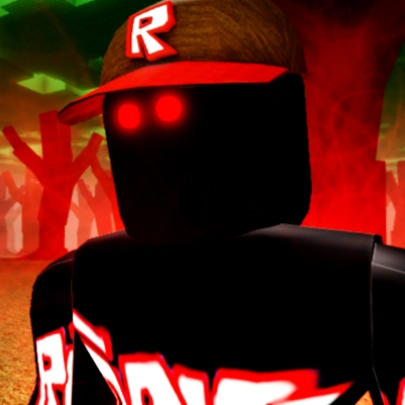

roblox- безкоштовна онлайн-платформа для створення ігор. Користувачі можуть створювати власні ігри в Roblox Studio[⇨], грати в ігри, створені іншими користувачами, а також створювати та вигадувати одяг для свого персонажа. Деякі товари в каталозі можна купити за ігрову валюту — Robux.
theory№1
Guest666-Показано, що Гість 666 — це винятково мстивий, жорстокий, але всеосяжний дух, який прагне завдати шкоди лише тим, хто має намір завдати шкоди іншим, оскільки його вічне палке бажання помститися, щоб змусити будь-яких хуліганів відчувати біль і страждання, подібні до тих, які він постійно терпів у своєму минулому.
У своєму попередньому житті він був інтровертним, тихим і віддаленим Гостем, який виглядав нормальним, незважаючи на те, що він відчайдушно шукав друзів, за винятком того, що у відповідь отримував жорстоку, неввічливу відмову скептично налаштованих людей. Його самотність була для нього незручною, спричиняючи його депресію та боягузливу тривогу, коли він бачив будь-яких хуліганів.

Theory№2
У дитинстві Гість 1337 був досить наївним і дуже доброзичливим до інших і швидко подружився з Дейзі після знайомства. Він альтруїстичний, сміливий і має сильне почуття справедливості протягом усього життя, яке проявилося в дитинстві, коли він виступив, щоб захистити Дейзі від хуліганів, а також коли він приєднався до армії в дорослому віці; однак майже пожертвував своїм життям, щоб повторно перемогти Імперію Бекона. Він відкладає особисті образи заради загального блага, незважаючи на те, що він все ще банальний, наївний і трохи безрозсудний, і він смілива особистість.
Гість 1337 особливо піклується про свою родину та друзів. Ледь не втрачаючи свого найкращого друга, Метта, у битві – це те, що спонукало його вистояти у війні. Він дуже любить свою дочку, довіривши Метту записку для Шарлотти, коли він очікує, що сам помре, вбиваючи генерала Бекона. Під час подій Blox Watch Гість 1337, хоча й досі солдат, піклується про те, щоб повернути подарунки для Шарлотти. Він твердо вірить, що вся його родина дуже дорога йому, про що свідчить, коли вони намагаються змусити його битися до смерті в The Last Guest 3 (The Uprising).
Гість, будучи добрим солдатом, не боїться не слухатися наказів заради загального блага. Загалом Гість 1337 є героєм і людиною, яку варто поважати.
Theory №3
c00lkidd був сумно відомим експлойтером у Roblox, найбільш відомим за зловживання експлойтами в популярних іграх свого часу (таких як Work at a Pizza Place та Hide & Seek Extreme), створення популярної групи експлойтерів "team c00lkidd",
Theory №4
John Doe та Jane Doe - офіційні тестові акаунти, створені керівниками Roblox Девідом Басзукі та Еріком Касселем 25 червня 2005 року (хоча дати їх приєднання зазначені як 27 лютого 2006 року). Ім'я Джон Доу відноситься до анонімного чоловіка, і так само Джейн Доу відноситься до анонімної жінки